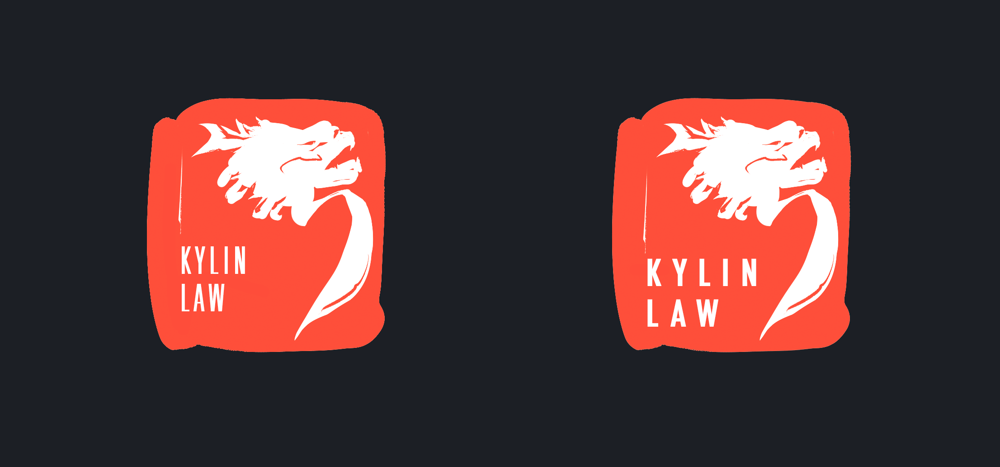
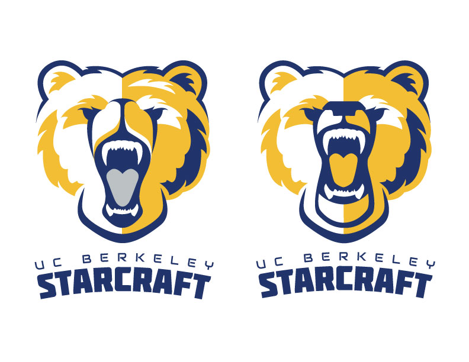
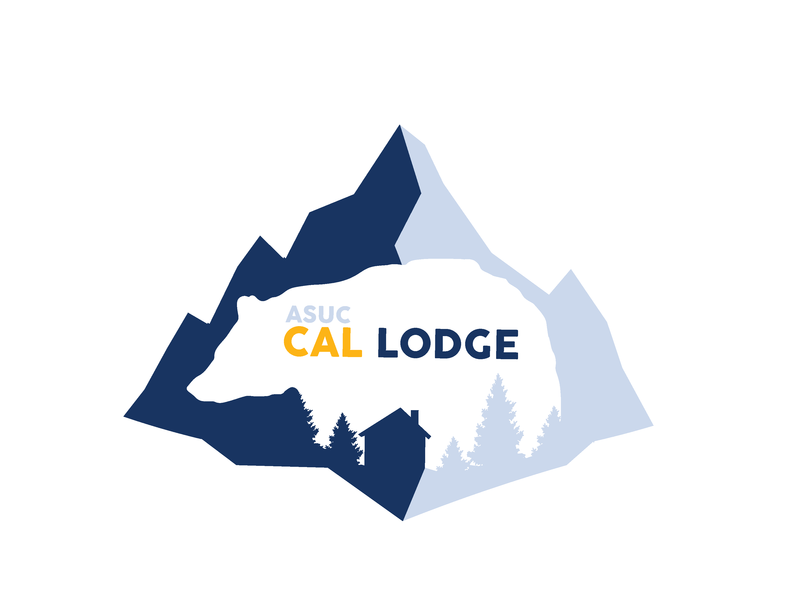
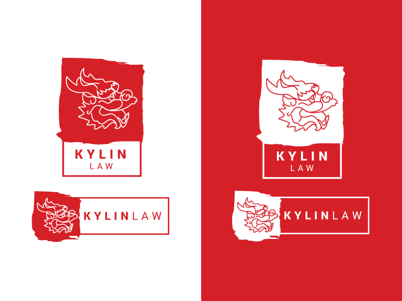
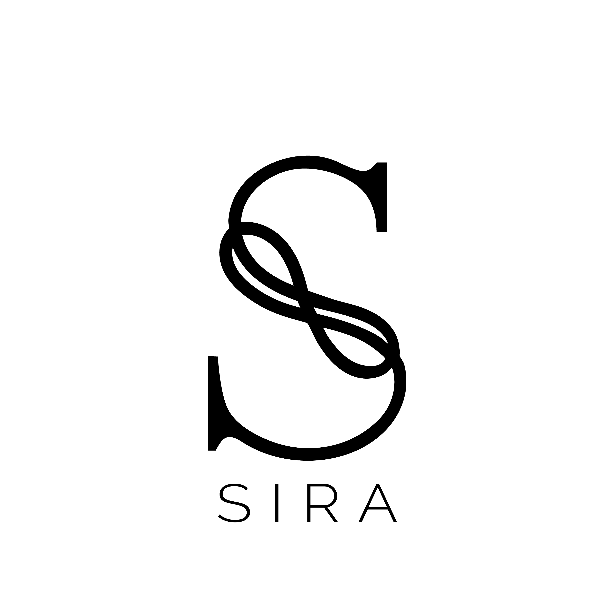
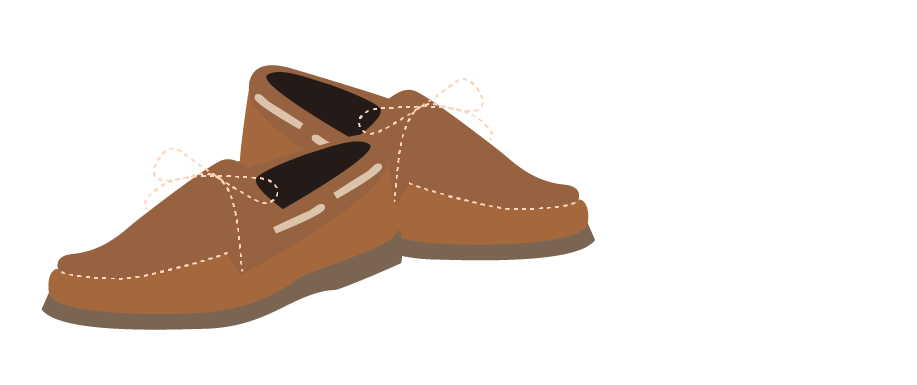

Blue Tier is a group of intermediate to advanced designers that offers design services to off-campus groups such as businesses and restaurants.

Some work we've done for clubs on campus include Starcraft at Berkeley and Cal Lodge.


We have also done work for off campus clients including Kylin Law, Memora, and Sira.


Blue tier goes behind making Berkeley beautiful -- we're committed to making all communities beautiful!
